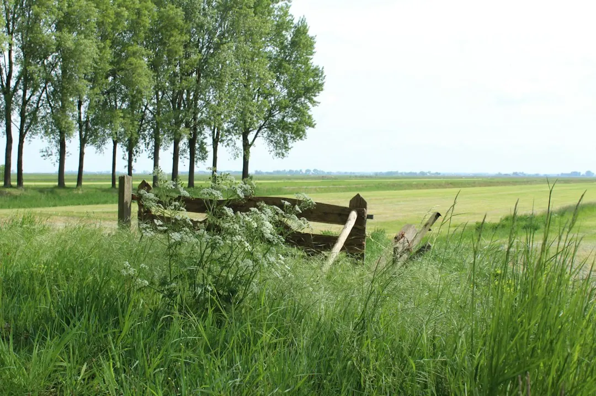

For an Ipswich fencing project, start by choosing between Colorbond steel and lap-and-cap timber, then record fence length, height, access, ground levels, gates and whether an old fence needs removal. The Fencing Contractors says free quotes can include removal and disposal. A written scope should separate materials, footings, gates, access requirements, removal and timing before work is agreed.
For homeowners comparing timber fencing ipswich options, the practical decision is how the material, boundary conditions and quote inclusions fit the site.
Timber Fencing Ipswich Explained
The Fencing Contractors presents Ipswich fencing as a project that starts with the boundary details, not just a material choice. The first decision is usually between Colorbond steel and lap-and-cap timber, followed by questions about height, length, access, levels, openings and the fence being removed.
Colorbond steel is described as steel boundary fencing. Lap-and-cap timber uses overlapping palings with a capped finish. Neither choice can be assessed properly from a material label alone. A boundary with a short return, a change in level or restricted access may need a different scope from a straight, open run.
- Measure each fence run and note changes in height.
- Mark corners, returns, gates and other openings.
- Record what is beside the boundary, including gardens, obstacles or narrow side access.
- Describe the existing fence and whether removal and disposal are required.
The website also identifies boundary and privacy as separate planning questions. Before agreeing to work, check how the proposed layout relates to the boundary and any shared decisions.
What changes the total quote
A metre rate is only useful when the inclusions are clear. The published guidance identifies length and height as starting points, while removal, slope, footing requirements, access and gates can change the total. These details should appear in the written scope rather than being left as assumptions.
Ground levels deserve particular attention. A slope can affect panel layout, gaps and the work required along the boundary. The proposed fence system, ground conditions and exposure also need assessment before footing details are agreed. That does not mean a homeowner needs to determine the footing design alone. It means the quote request should give the installer enough information to assess it.
Access affects more than convenience. Narrow side access, gardens and obstacles can change how materials and waste are moved. If an old fence is coming out, state its approximate length and material where known, and ask whether removal and disposal are both included. For gates, record the number of openings and their approximate widths, then check the hardware and support posts included in the price.
Compare steel and lap-and-cap timber
The two main options create different questions for the quote. Steel boundary fencing may suit a homeowner seeking a Colorbond option, while lap-and-cap timber provides overlapping palings and a capped finish. The right comparison is not simply appearance. It is the complete scope for the particular boundary, including layout, support, access and openings.
Use the table as a discussion guide. Ask the installer to explain any differences in site preparation, footing details, gate construction, removal and disposal, and the items excluded from each option.
For a replacement project, photographs of the existing boundary can make the initial description more useful, especially where access, slope or obstacles are difficult to explain. The published enquiry process asks for the suburb, fence type and approximate length, with photos as an optional addition.
A practical quote and site-check process
The published process has three useful stages. First, describe the boundary with the suburb, fence type and approximate length. Add the old-fence requirement, gate openings, access notes and photographs if available. Second, confirm availability and arrange the site assessment needed for a written scope. Third, compare the completed quotes by checking inclusions, exclusions and timing before agreeing to work.
- Prepare the project description before requesting a quote.
- Ask which site conditions still need to be checked.
- Request removal, disposal, gates and access work as separate inclusions where relevant.
- Read the written scope and ask about anything not clearly allocated.
The website says quotes are free and no obligation, and that old-fence removal can be included. A free quote is still only useful when the requested scope is detailed enough to compare. If the boundary is shared, read the Queensland Government dividing-fence guidance before making an agreement about the work.
Who this guide applies to
This guide is for Ipswich homeowners and property decision-makers planning a new boundary fence, replacing an existing fence, adding a gate or comparing Colorbond steel with lap-and-cap timber. It is also relevant where a retaining wall is existing or proposed, because the support, levels and responsibility for each part need to be discussed.
It is not a substitute for a site assessment or a written quote. The published local focus is Ipswich, with South East Queensland identified as the next area of attention. For a broader Australian comparison, see the wider fencing contractors guide, then return to the site-specific questions for the boundary being considered.
Before accepting any proposal, make sure the material, fence line, height, gates, footing assumptions, access, old-fence removal, disposal, exclusions and timing are understandable in writing.
- Describe the boundary. Provide the suburb, fence type, approximate length, height changes, access notes and photographs if useful.
- List project additions. Identify gates, openings, the existing fence, removal and disposal, retaining walls and other boundary conditions.
- Arrange the site check. Confirm availability and ask what assessment is needed before a written scope can be prepared.
- Compare the scope. Check materials, exclusions, access work, footings, gates, removal, disposal and timing before agreeing to work.
| Option | Useful description | Quote questions |
|---|---|---|
| Colorbond steel | Steel boundary fencing | What layout, support, access work and gates are included? |
| Lap-and-cap timber | Overlapping palings with a capped finish | What timber scope, footing details, gates and finishing inclusions are included? |
Common questions
What are the main fencing options described for Ipswich? The published options are Colorbond steel and lap-and-cap timber. The timber option is described as overlapping palings with a capped finish.
Can old-fence removal be included? Yes. The published guidance says old-fence removal can be included in the quote. Ask for removal and disposal to be listed clearly in the scope.
Is a price per metre enough to compare quotes? Not by itself. Length is only one part of the scope, alongside height, slope, footing requirements, access, gates, removal and disposal.
What should be recorded before requesting a quote? Record the suburb, fence type, approximate length, changes in height, gate openings, access conditions and whether an old fence needs removal. Photos may also help explain the boundary.
What should happen when the boundary is shared? Check the Queensland Government dividing-fence guidance before agreeing to work, and clarify the boundary, proposed layout and shared decisions in the project discussion.
This guide covers material choice, boundary details, quote inputs and comparison questions for fencing projects in Ipswich.